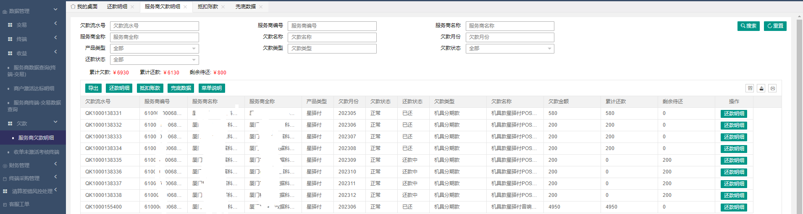

月结分润知识点：
一、为什么会有月结分润
- 1.服务商早期政策没有做日结；
例：传统收单平台（18年之前的星通宝政策）
判断方式：《收单平台》-运营管理- 代理商管理-代理商信息管理_查看/服务商日结分润信息_运营；
通过该菜单判断服务商的平台开立时间以及日结维护情况，若日结分润信息菜单查询不到数据，则说明服务商没有相关日结分润政策
- 2.服务商日结分润被关闭
可通《 清结算平台》-代理商管理-挂起总表_查询 菜单核实服务商日结关闭情况
- 3.服务商成本有被调整过
可通过《超级POSM平台》-综合管理-运营管理-服务商信息变更审核-服务商结算成本变更审核 菜单查询是否有变更记录
服务商日结成本变更是次日生效，但我司计算当月的分润金额时是按照生效后的成本进行结算，因此会导致服务商有月结收益。
例：
15日申请一级变更成本通过，则16日成本按照变更后的成本结算， 在次月计算分润数据中1-15日的交易也会按照新的成本结算，这部分的收益与日结的差价即为月结收益；
二、月结分润如何结算
- 每月15-26号为我司付款周期， 在付款周期内对于满足条件的服务商会进行付款，若服务商在付款周期内未满足付款条件，会在当月月底最后一个工作日补付一次
三、月结分润怎么查看明细，如何给下级结算
- 若是需要给下级结算，建议通过历史交易进行结算。
根据服务商没有正常日结结算的时间点去导出相应的历史交易
计算方式：
分润=手续费-成本
手续费=交易金额*商户费率
成本=交易金额*代理商结算成本
四、各业务产品当月分润数据查询方式
传统小微：
1.当月分润明细可通过《信息化平台》-综合管理-数据管理-收益-月结分润明细菜单进行查询（该菜单可以查询近一年的分润明细；案例 月结分润明细数据字段说明）2.当月分润汇总数据可通过《信息化平台》-综合管理-数据管理-收益-分润确认菜单进行查询当月各平台的分润合计数据
3.日结分润数据可通过《信息化平台》-综合管理-数据管理-收益-服务商秒结明细菜单进行查询（秒结明细仅支持查询近90天的数据，且需注意本级服务商只能看到自身收益及下级总收益）
4.下级日结的收益可通过《信息化平台》-综合管理-数据管理-收益-下级日结收益查询
星驿付：
1.当月分润明细可通过《信息化平台》-综合管理-数据管理-月结分润明细菜单进行查询（该菜单可以查询近一年的分润明细；案例 月结分润明细数据字段说明）2.当月分润汇总数据可通过《信息化平台》-综合管理-数据管理-收益-分润确认（星驿付）菜单进行查询当月各平台的分润合计数据
3.日结分润和下级日结收益同传统小微
星POS：
1.当月分润明细可通过星POS后台-收单运营管理-报表下载菜单查看一级分润汇总表2.单月分润汇总数据可通过星POS后台-收单运营管理-报表下载菜单查看分润审批表
日结分润知识点：
一、日结分润如何结算规则
- 1.日结收益通过星驿秘书进行结算，当天的交易在星驿秘书首页会显示今日预计收益，次日会结算到秘书余额
2.下级秘书到账余额吗，是扣除过税点
二、日结分润未收到排查处理流程
- 1.核实情况是一级未收到还是所属未收到分润
- 2.核实对应服务商及上级服务商日结状态是否为开启状态（分润是层层结算， 若一级服务商日结是关闭的则子级服务商也无法收到分润）
- 3.查询当日交易的商户是什么活动的商户，看对应服务商是否有配置对应活动的日结分润政策（一级由我司配置，子级均由上级进行配置）
- 4.查询当日交易的商户是否是该代理明细，若非该代理名下，确认上下级结算价是否一致，若一致收益结算为下级服务商；
注意：传统小微商户若是有参与调价，服务商结算成本需加上调价部分在进行计算分润
网路服务费奖励：
一、网络服务费结算规则
二、相关问题处理思路
- 1.服务商咨询网络服务费收取明细？
传统小微：星通宝、陆POS、小陆、小陆20产品通过代理后台-终端管理-终端网络服务费缴纳明细菜单查询
小陆21、陆易付、稳定版等小陆20之后的政策通过代理商后台-商户管理-商户网络服务费缴纳明细菜单查询
星驿付：代理商管理-交易管理-历史交易流水速查
欠款常见问题：
一、查询服务商查询自身欠款及还款明细
服务商：
查询当前剩余欠款
查询路径：【信息化平台】-【综合管理】-【数据管理】-【欠款】-【服务商欠款明细】

服务商可通过此页面查看剩余待还金额查询欠款还款来源：
查询路径：【信息化平台】-【综合管理】-【数据管理】-【欠款】-【服务商欠款明细】

1.输入欠款流水号或欠款名称，可查询该笔欠款或该类型欠款的全部还款情况
2.若需查询当月收益抵扣那些欠款，可筛选还款日期，需注意日结抵扣部分需筛选，还款时间为当月；月结收益抵扣部分需筛选还款时间为次月； 例：当前需查询10月份分润一共抵扣了那些欠款，需筛选10.1-10.31日结抵扣部分以及11.1-11.31月结收益抵扣部分，两部分数据合计；